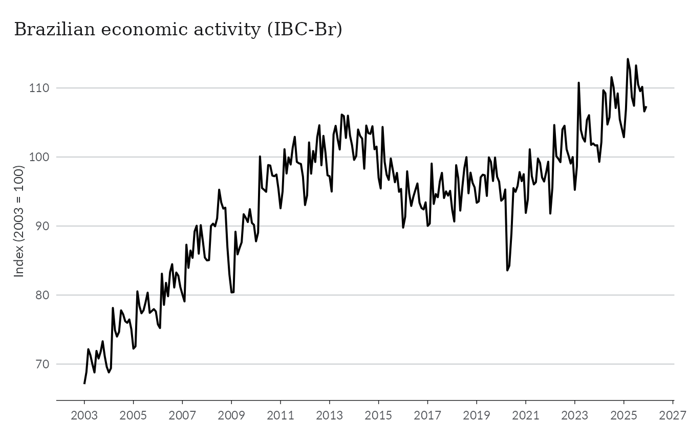
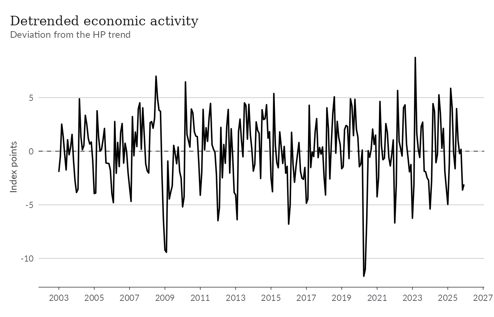
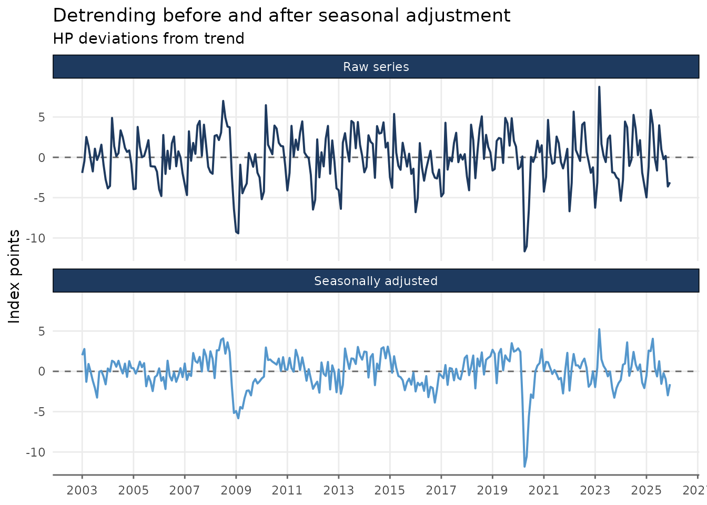
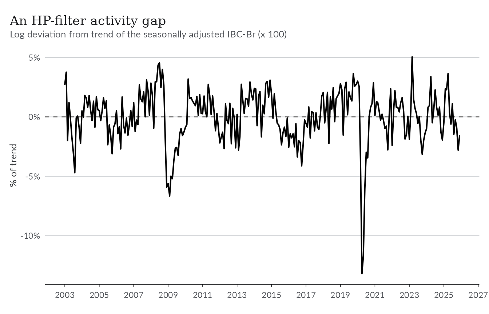
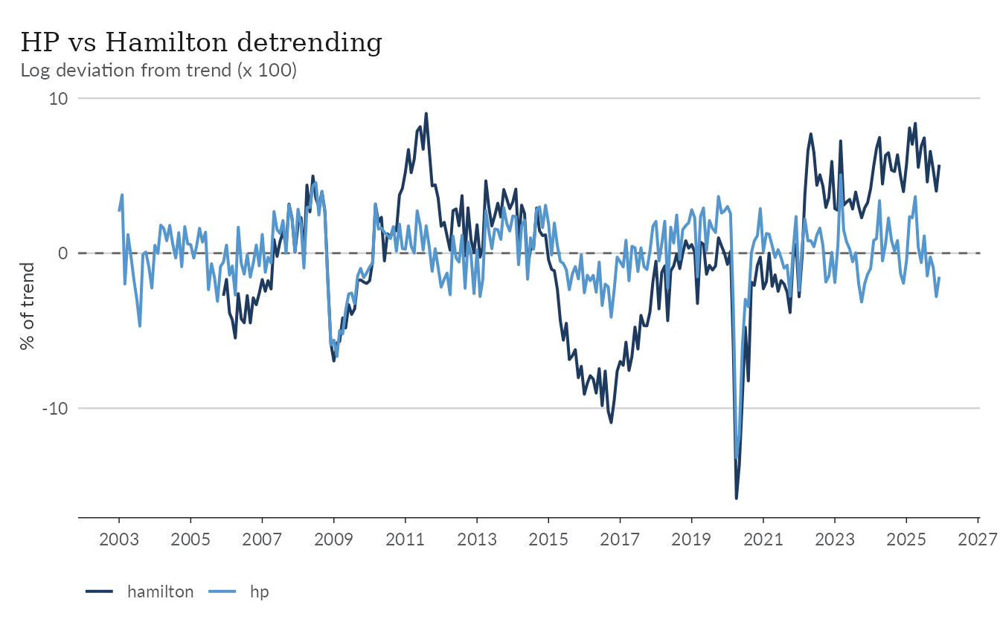
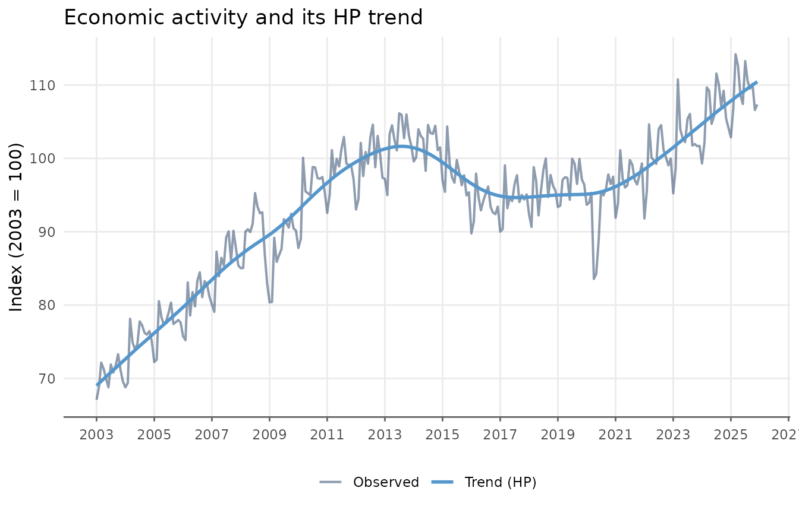
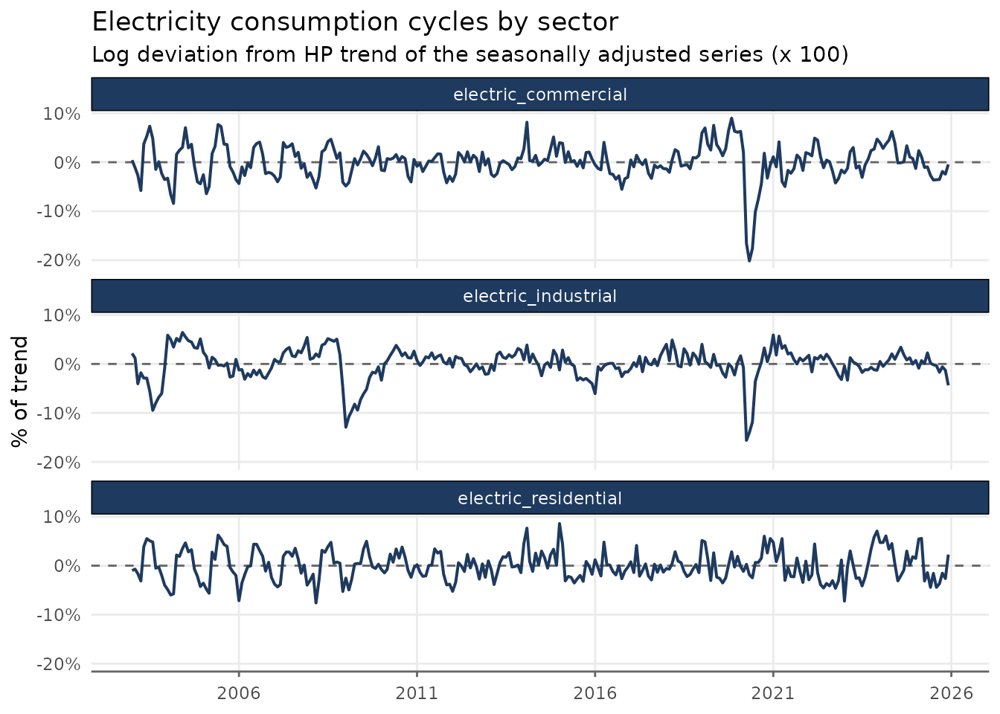

Detrending Series
The trend extraction methods covered in the other vignettes return a
smooth trend. Often, though, the trend is exactly the part we want to
remove: in macroeconomics the object of interest is usually the
deviation from trend — the cycle, or the
output gap when the series measures aggregate activity.
detrend_series() removes the trend from a series and adds
the detrended series as a column to the original data frame.
The theme below is used throughout the vignette for consistent styling.
library(ggplot2)
theme_series <- theme_minimal(paper = "#fefefe") +
theme(
legend.position = "bottom",
panel.grid.minor = element_blank(),
strip.background = element_rect(fill = "#2c3e50"),
strip.text = element_text(color = "#fefefe"),
axis.ticks.x = element_line(color = "gray40", linewidth = 0.5),
axis.line.x = element_line(color = "gray40", linewidth = 0.5),
axis.title.x = element_blank(),
palette.colour.discrete = c(
"#2c3e50",
"#e74c3c",
"#f39c12",
"#1abc9c",
"#9b59b6"
)
)Trend extraction vs detrending
detrend_series() is the mirror image of
augment_trends().
-
augment_trends()returns the trend (trend_*columns) and discards the fluctuations around it. -
detrend_series()returns the fluctuations (detrend_*columns): the trend is fitted with the same methods and then subtracted from the series, so the exact identityvalue = trend + detrendholds.
Any of the 20 trend methods supported by
augment_trends() can be used for detrending. The default is
the Hodrick-Prescott filter ("hp"), the
most common detrending choice for economic data, with the smoothing
parameter set automatically from the frequency of the series. And unlike
decompose_series(), which needs a seasonal component to
isolate, detrending is well defined at any frequency.
A first detrended series
Let’s start with the ibcbr dataset, a monthly index of
Brazilian economic activity (IBC-Br) compiled by the Central Bank.
ggplot(ibcbr, aes(date, index)) +
geom_line(lwd = 0.7) +
scale_x_date(date_breaks = "2 years", date_labels = "%Y") +
labs(
title = "Brazilian economic activity (IBC-Br)",
y = "Index (2003 = 100)"
) +
theme_series
Passing the data to detrend_series() adds a single new
column, detrend_hp, holding the deviation from the HP
trend. The frequency is detected automatically from the date column.
ibcbr_cycle <- ibcbr |>
detrend_series(value_col = "index")
ibcbr_cycle
#> # A tibble: 276 × 3
#> date index detrend_hp
#> <date> <dbl> <dbl>
#> 1 2003-01-01 67.1 -1.93
#> 2 2003-02-01 68.8 -0.482
#> 3 2003-03-01 72.2 2.53
#> 4 2003-04-01 71.3 1.37
#> 5 2003-05-01 70.0 -0.250
#> 6 2003-06-01 68.8 -1.75
#> 7 2003-07-01 71.9 1.07
#> 8 2003-08-01 70.8 -0.332
#> 9 2003-09-01 71.8 0.344
#> 10 2003-10-01 73.3 1.57
#> # ℹ 266 more rows
ggplot(ibcbr_cycle, aes(date, detrend_hp)) +
geom_hline(yintercept = 0, color = "gray40", lty = 2) +
geom_line(lwd = 0.7) +
scale_x_date(date_breaks = "2 years", date_labels = "%Y") +
labs(
title = "Detrended economic activity",
subtitle = "Deviation from the HP trend",
y = "Index points"
) +
theme_series
The big picture is right — the 2008–09 recession, the 2015–16 crisis, and the COVID collapse all show up as deep negative deviations. But the line is also covered in a regular saw-tooth pattern. That is not the business cycle: it is seasonality, and it points to an important caveat.
Detrending does not deseasonalize
The IBC-Br index above is not seasonally adjusted, and detrending only removes the slow-moving part of the series. The seasonal swings are too fast for the trend to absorb, so they end up in the detrended series, where they can drown out — or be mistaken for — cyclical movements.
The fix is to remove the seasonal component first and detrend the
seasonally adjusted series. The two wrappers compose naturally:
deseason_series() adds a seasadj_stl column,
which detrend_series() can then take as its input.
ibcbr_sa_cycle <- ibcbr |>
deseason_series(value_col = "index") |>
detrend_series(value_col = "seasadj_stl")
ibcbr_sa_cycle
#> # A tibble: 276 × 4
#> date index seasadj_stl detrend_hp
#> <date> <dbl> <dbl> <dbl>
#> 1 2003-01-01 67.1 71.4 2.00
#> 2 2003-02-01 68.8 72.5 2.77
#> 3 2003-03-01 72.2 68.7 -1.30
#> 4 2003-04-01 71.3 71.1 0.918
#> 5 2003-05-01 70.0 70.5 -0.0433
#> 6 2003-06-01 68.8 69.6 -1.16
#> 7 2003-07-01 71.9 69.0 -2.06
#> 8 2003-08-01 70.8 68.1 -3.26
#> 9 2003-09-01 71.8 71.6 -0.0420
#> 10 2003-10-01 73.3 72.0 0.0601
#> # ℹ 266 more rowsWe can compare the approaches side by side.
cycles <- bind_rows(
list(
"Raw series" = ibcbr_cycle,
"Seasonally adjusted" = ibcbr_sa_cycle
),
.id = "input"
)
cycles <- cycles |>
rename(cycle = detrend_hp)
ggplot(cycles, aes(date, cycle)) +
geom_hline(yintercept = 0, color = "gray40", lty = 2) +
geom_line(aes(color = input), lwd = 0.7, show.legend = FALSE) +
facet_wrap(vars(input), ncol = 1) +
scale_x_date(date_breaks = "2 years", date_labels = "%Y") +
labs(
title = "Detrending before and after seasonal adjustment",
subtitle = "HP deviations from trend",
y = "Index points"
) +
theme_series
The seasonally adjusted cycle tells the same story more clearly. For seasonal data this two-step workflow — deseason, then detrend — should be the default.
Percentage deviations from trend
The ibcbr series in measured in index points, which can
make it hard to comapre across series or different time periods. A
common solution in macroeconomics is to report deviations as a
percentage of the trend — this is how output gaps are usually
stated.
Setting transform = "log" fits the trend on the log
scale and returns the log deviation from trend,
log(value) - log(trend). Multiplied by 100, this is
approximately the percentage deviation. On the original scale the
identity becomes multiplicative:
value = trend * exp(detrend).
ibcbr_gap <- ibcbr |>
deseason_series(value_col = "index") |>
detrend_series(value_col = "seasadj_stl", transform = "log")
ggplot(ibcbr_gap, aes(date, detrend_hp)) +
geom_hline(yintercept = 0, color = "gray40", lty = 2) +
geom_line(lwd = 0.7) +
scale_x_date(date_breaks = "2 years", date_labels = "%Y") +
scale_y_continuous(labels = scales::percent) +
labs(
title = "An HP-filter activity gap",
subtitle = "Log deviation from trend of the seasonally adjusted IBC-Br (x 100)",
y = "% of trend"
) +
theme_series
The COVID trough now reads directly as “activity was about 13% below trend”.
Comparing detrending methods
As with similar functions in trendseries, the
methods argument accepts multiple methods in a single
function call. Since the actual “cycle” is not observed, different
filters take different stances on what counts as “trend”.
Passing several methods adds one detrend_* column per
method, so the implied cycles can be compared side by side. Here we
contrast the HP filter with the Hamilton filter, a
regression-based alternative proposed as an alternative for the HP
filter.
ibcbr_methods <- ibcbr |>
deseason_series(value_col = "index") |>
detrend_series(
value_col = "seasadj_stl",
methods = c("hp", "hamilton"),
transform = "log"
)
methods_long <- ibcbr_methods |>
pivot_longer(
cols = starts_with("detrend_"),
names_to = "method",
names_prefix = "detrend_",
values_to = "cycle"
)
ggplot(methods_long, aes(date, 100 * cycle)) +
geom_hline(yintercept = 0, color = "gray40", lty = 2) +
geom_line(aes(color = method), lwd = 0.7) +
scale_x_date(date_breaks = "2 years", date_labels = "%Y") +
labs(
title = "HP vs Hamilton detrending",
subtitle = "Log deviation from trend (x 100)",
y = "% of trend",
color = NULL
) +
theme_series
The two cycles agree on the major swings but differ in amplitude and
timing — a useful reminder that detrended series are estimates, not
data. Note also that the Hamilton filter projects the series two years
ahead from a year of lags (h = 24, p = 12 for
monthly data), so its first three years of detrended values are missing;
methods with boundary effects (such as "bk") behave
similarly at both ends.
The unified parameters of augment_trends() —
window, smoothing, band,
align, and params — all pass through
unchanged. For instance, the Baxter-King filter isolates fluctuations
between 1.5 and 8 years directly:
ibcbr |>
deseason_series(value_col = "index") |>
detrend_series(
value_col = "seasadj_stl",
methods = "bk",
band = c(18, 96) # periods in months
)The Econometric Filters vignette discusses what each of these filters does and how to choose between them.
Keeping the fitted trend
By default only the detrended column is added. Setting
components = TRUE also keeps the fitted
trend_* columns, which is handy for plotting the trend
against the series or for verifying the identity.
ibcbr_parts <- ibcbr |>
detrend_series(value_col = "index", components = TRUE)
all.equal(ibcbr_parts$trend_hp + ibcbr_parts$detrend_hp, ibcbr_parts$index)
#> [1] TRUE
ggplot(ibcbr_parts, aes(date)) +
geom_line(aes(y = index, color = "Observed"), lwd = 0.7, alpha = 0.5) +
geom_line(aes(y = trend_hp, color = "Trend (HP)"), lwd = 1) +
scale_x_date(date_breaks = "2 years", date_labels = "%Y") +
labs(
title = "Economic activity and its HP trend",
y = "Index (2003 = 100)",
color = NULL
) +
theme_series
With transform = "log" the trend is reported back in the
units of the series, so the same plot works unchanged; the identity is
then value = trend * exp(detrend).
Grouped detrending
Like the other functions in the package,
detrend_series() accepts a group_cols argument
to detrend several series at once. The full workflow — seasonal
adjustment followed by detrending, in percent of trend — carries over
group by group. Here we use the electricity dataset, which
records monthly electricity consumption for three sectors.
elec_cycles <- electricity |>
dplyr::filter(date >= as.Date("2003-01-01")) |>
deseason_series(group_cols = "name_series") |>
detrend_series(
value_col = "seasadj_stl",
group_cols = "name_series",
transform = "log"
)
glimpse(elec_cycles)
#> Rows: 828
#> Columns: 5
#> $ date <date> 2003-01-01, 2003-02-01, 2003-03-01, 2003-04-01, 2003-05-0…
#> $ name_series <chr> "electric_commercial", "electric_commercial", "electric_co…
#> $ value <dbl> 4182, 4153, 4221, 3948, 3938, 3711, 3667, 3720, 3686, 4001…
#> $ seasadj_stl <dbl> 3862.461, 3819.806, 3778.933, 3678.709, 4063.355, 4147.311…
#> $ detrend_hp <dbl> 0.004224489, -0.011316838, -0.026511318, -0.057827607, 0.0…
ggplot(elec_cycles, aes(date, detrend_hp)) +
geom_hline(yintercept = 0, color = "gray40", lty = 2) +
geom_line(color = "#2c3e50", lwd = 0.7) +
facet_wrap(vars(name_series), ncol = 1) +
scale_x_date(date_breaks = "5 years", date_labels = "%Y") +
scale_y_continuous(labels = scales::percent) +
labs(
title = "Electricity consumption cycles by sector",
subtitle = "Log deviation from HP trend of the seasonally adjusted series (x 100)",
y = "% of trend"
) +
theme_series
Commercial consumption swings the hardest — the collapse of in-person services during COVID stands out — while industrial demand stays closest to its trend.
Summary
-
detrend_series()removes the trend from a series, adding adetrend_{method}column with the deviation from trend (the cycle). The exact identityvalue = trend + detrendholds. - Any of the 20 trend methods of
augment_trends()can be used; the default is the HP filter with frequency-appropriate smoothing. - Detrending does not remove seasonality: for
seasonal data, run
deseason_series()first and detrend theseasadj_*column. - Use
transform = "log"for deviations in percent of trend (the output-gap convention); the identity becomesvalue = trend * exp(detrend). -
components = TRUEkeeps the fitted trend columns alongside the detrended series.